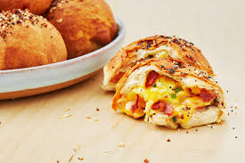

Breakfast

Breakfast Burritos
Ah, breakfast burritos. Has there ever been a more perfect hangover cure, or breakfast-for-dinner star? Mine has hash browns, bacon, scrambled eggs, avocado, and cheese, but the best thing about a breakfast burrito is how versatile it is. There's no ONE right way to make a breakfast burrito, but if you follow these easy rules, you're guaranteed perfect results every time.
- 8 slices bacon
- 1 (16-oz.) package frozen hash browns
- 8 large eggs
- 1/3 c. milk
- 4 Tbsp. butter
- Kosher salt
- Freshly ground black pepper
- 4 large flour tortillas
- 1/2 c. shredded cheddar
- 1 ripe avocado, sliced Hot sauce, for serving
Ingredients

Breakfast Bombs
These easy-to-make biscuit bombs are stuffed with all your favorite breakfast foods—scrambled eggs, crispy bacon, and CHEESE. Test Kitchen Tip: You can make this recipe in your air fryer in the same amount of time!
- 1 tube refrigerated biscuit dough
- 1 Tbsp. butter
- 4 eggs
- 2 Tbsp. whole milk
- 1 Tbsp. finely chopped chives
- 4 slices bacon, cooked and crumbled
- 3/4 c. shredded cheddar
- 2 Tbsp. melted butter
- 1 Tbsp. coarse salt
- 1 Tbsp. poppy seeds (or everything seasoning)